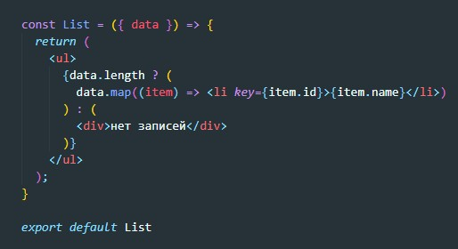
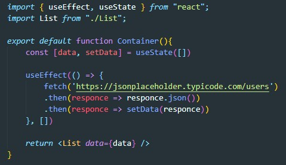

Функция без состояния ( далее Простые Копоненты) прекрасный способ определить универсальный компонент. Они не содержат состояния (state) или ссылку на DOM элемент (ref), это просто функции.
Распределение атрибутов это фитча JSX. Такой синтаксический наворот, чтобы передавать все свойства объекта как атрибуты JSX
Деструктурирующее присвоение это фича стандарта ES2015. Она отлично сочетается с props для Простых Компонентов.
Можете использовать обычный if/else синтаксис в компонентах. Но условные (тернарные) операторы это ваши друзья
Здесь применяется прицип чистой функции. Презентационная компонента должна делать только одно - отрисовывать JSX на соновании приходящих пропсов. Никаких side эффектов не должно быть. Где тогда должна происходить логика и обращения к API? Для этого существуют контейнерные компоненты. именно внутри них и происходят все side-эффекты
Допустим у нас есть презентационная компонента, которая отричовывает списко на основании пришедших данных через пропсы.
Вот как будет выглядеть контейнерная компонента
Соответственно, если нам понадобится отрисовать такой же список в другом месте, но уже с другими данными, мы просто напишем новую контейнерную компоненту.